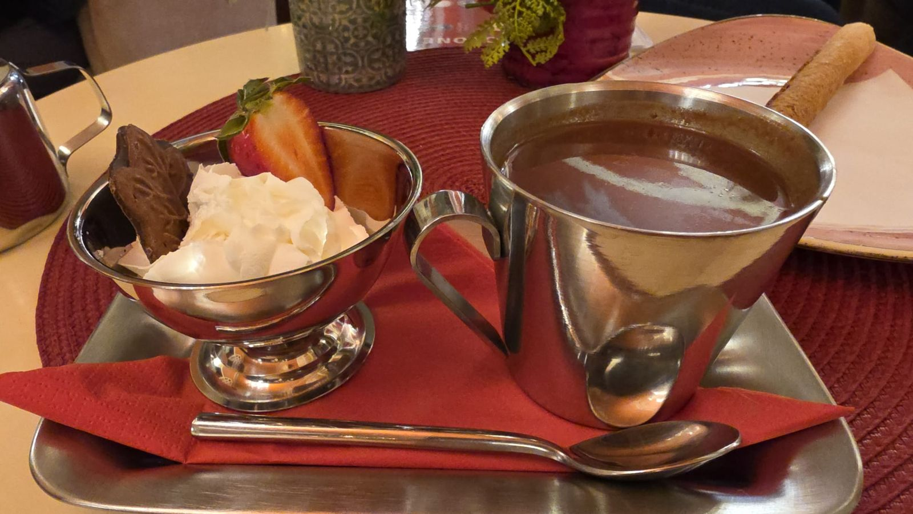
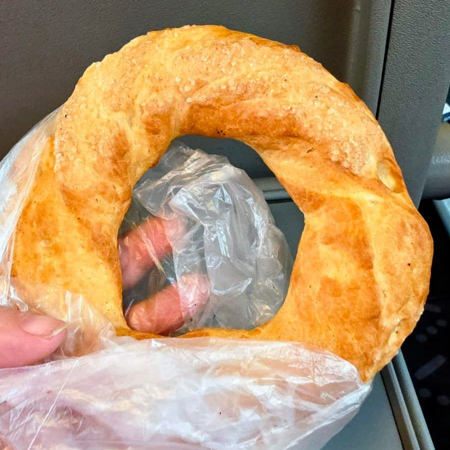
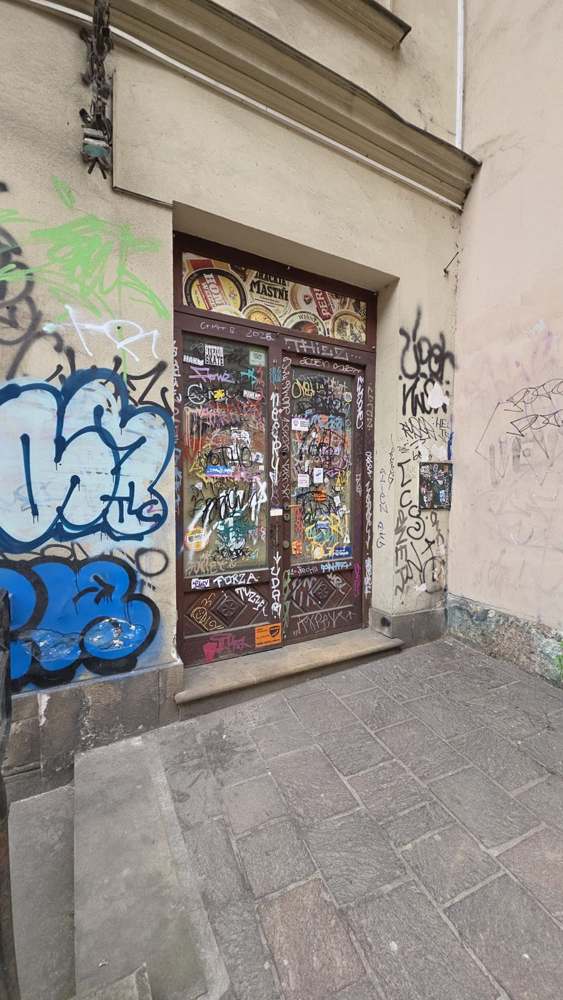
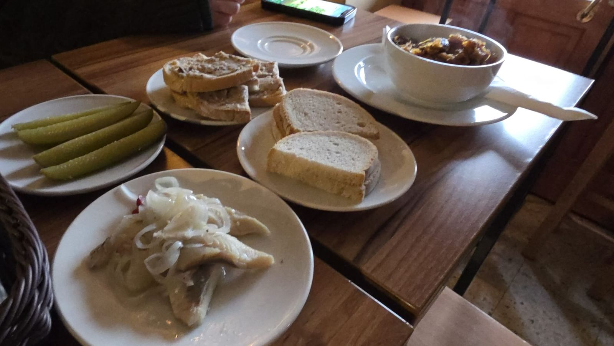
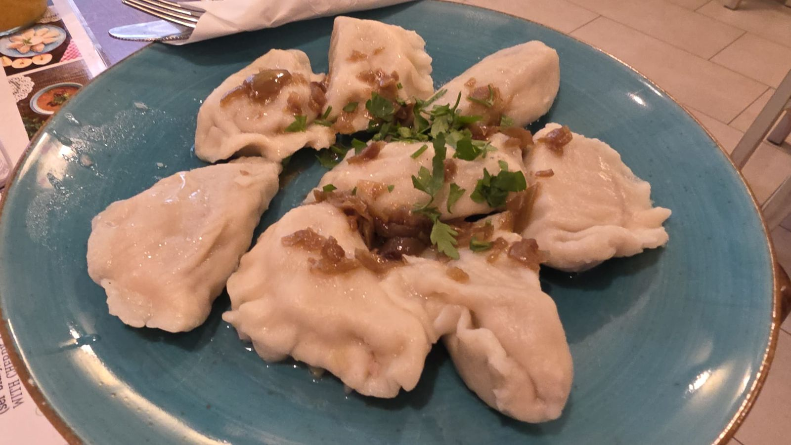
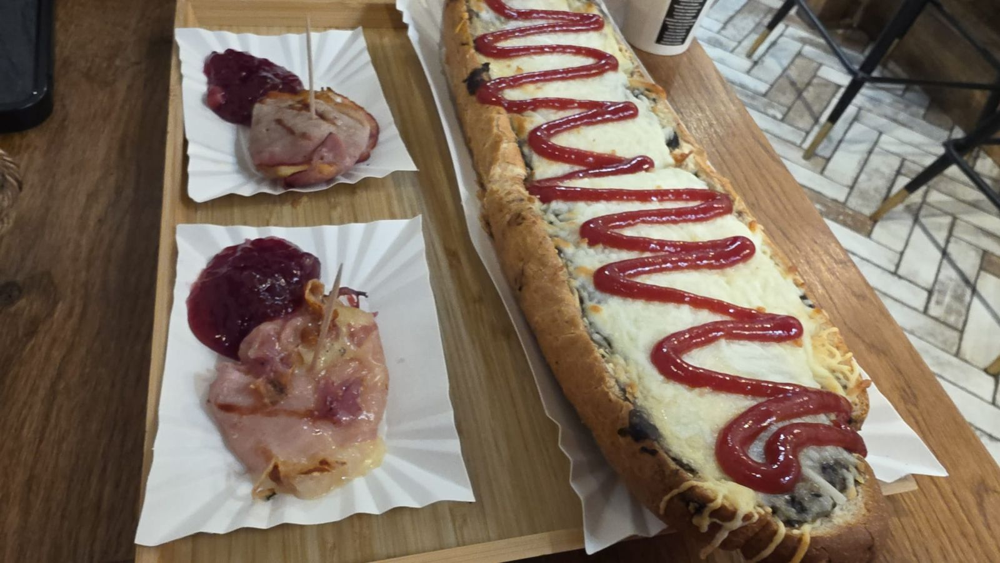
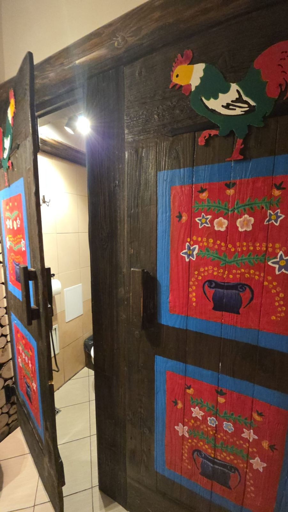
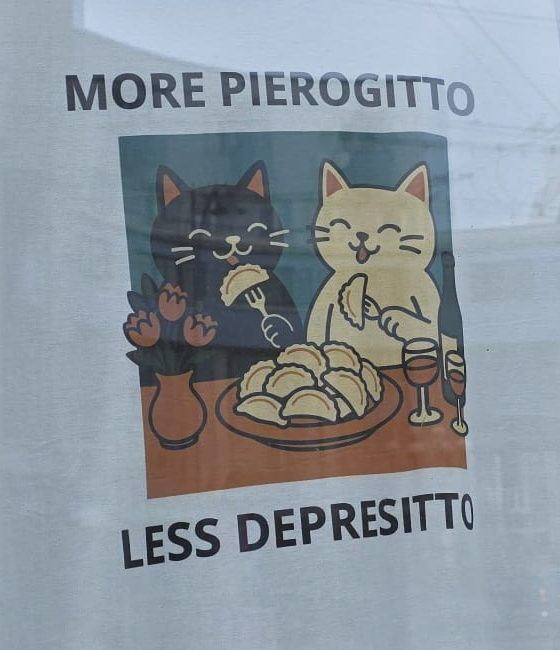

Journey 05 · Kraków Note 2 of 3 Field Note
Krakow: The Accidental Private Food Tour
My food tour was supposed to be a group event. Then the group rescheduled to a later arrival. Then they cancelled entirely, which is how I ended up alone with Jason for what became, accidentally, a private tour of Krakow’s food and drink scene.

Jason is originally from Portland, Oregon. He came to Europe to volunteer with Ukrainian refugee efforts, fell in love with Poland, fell harder for Krakow, and stayed. He guides food and bar tours, including a bar crawl that starts at 10pm, which tells you something about his energy levels, and is still actively involved in community support work. He isn’t formally fluent in Polish but is colloquially fluent, which means he knows exactly what to order and how to say it. He spent a good portion of the evening attempting to teach me Polish pronunciation, which I was increasingly bad at as the night went on.

We had excellent conversations. Current events, politics, what it actually feels like to be an American living in Europe long term, the particular texture of Krakow as a city. Jason is the kind of guide who makes you feel like you’re getting the real version of a place rather than the curated one, and I felt like I was exploring the city with a friend.
He also took me places I would never have found on my own. And I mean that literally.
At one point the directions were: through this graffiti-covered door, down the dark alleyway, to the restaurant behind the wooden door that looks like it was repurposed from the original Wawel Castle front door. At another: down this hallway, then down these dark and slightly misty steps, to an underground karaoke and vodka bar. On my own, without Jason, I would have walked past without a second glance. The first glance would have been enough for me to say “absolutely no way am I going to walk down “star in your own personal Lifetime Movie special” hallway.

But first, the food.

Hunter’s Stew
Amazing. I loved it immediately and without reservation. It is the kind of dish that tastes like it has been simmering since the Middle Ages, which for all I know it has.
Polish Pickles
Please. Never give me another kind of pickle. These were the best I have ever had and I am prepared to be very firm about this going forward.
Bread and Smalec
If you don’t think about it, its good. The bread was hearty. The smalec is cultural and has a rich full flavor. And it should: it is rendered pork fat with onions and spices. It’s an efficient “winter is cold, here are some calories” meal. It was excellent with the hunters stew added to the top. However, it is worth noting that I am certainly in no need efficient calorie delivery methods.
Preserved Fish
The only dish I drew a hard line at. I cannot do fish, especially fishy fish.
Homemade House Liquor
It had already been poured, so how could I say no? I drank it and waited for the aftermath. No aftertaste. No burn. Kinda delightful, actually.
Cherry Liquor
Served in a chalice, which set expectations in one direction. I took a few polite sips prepared to fake my way through it.
Except… wow. Delicious. Okay, I’ll do a second.

Pierogi
Pierogi is already plural. Stop adding an S. (Note: it is hard not to add the “s”) We explored the traditional Jewish quarter of Krakow for this stop, an area that is also a developing arts and culture hub, full of street art and interesting people, and the pierogi were like a warm hug from a city that had decided it liked you.
Polish Vodka
Important note: do not suggest this is a Russian spirit. Polish vodka is a tradition over 500 years old, made with crystal clear Polish spring water, and is so high quality there is only smooth, clear taste and no burn. I tried several in different flavors. All were amazing. None made my eyes water or caused me to cough uncontrollably.
I had gotten very chatty by this point and the exact history of the next section of walking is a little fuzzy. I think this is where we talked about house numbers? This is also why there aren’t photos of everything available, as many of them are as fuzzy as my memory.

Zapiekać
I am always game to try new things, especially iconic street foods. But I must be transparent about two facts:
- I do not like mushrooms.
- Ketchup is not a pizza topping. It is barely tolerable on fries.
Zapiekać is half a baguette, scooped out and filled with a thick – very thick, we love mushrooms in Poland, so many mushrooms, more mushrooms, even more mushrooms – layer of sautéed mushrooms, topped with melted cheese and a squiggle of ketchup.
I did my best, because politeness is basically part of my DNA.
Anyhow. I hated it. If you take a thing I love above all other foods (cheese) and add two things I hate (mushrooms and ketchup), it turns out I still hate it. This was, for me, a crime against pizza far worse than pineapple.

This was a bathroom, beautifully hand painted. We won’t linger on the amount of time I spent in here confused about whether I was in the right place as both doors featured roosters.
After what I can only describe as a heroic act of diplomatic eating, it was onto the last stop. Another bar. A few more shots. A lot more talking.
I did not sing karaoke at the underground bar, which is fortunate. My singing could be considered an act of international harm. Instead I stumbled back out to the street, bought myself a proper pizza slice, and made my way to the classical music concert I had tickets for.
The church was, mercifully, right next door to the bar. Which made the discovery that I was considerably more tipsy than I had realized when I agreed to those last few shots somewhat less catastrophic than it might otherwise have been.
I sat in the pew. The music started. It was amazing.
Some evenings just work out.

Originally published at fieldnotesfromabroad.com/2026/04/25/krakow-the-accidental-private-food-tour/